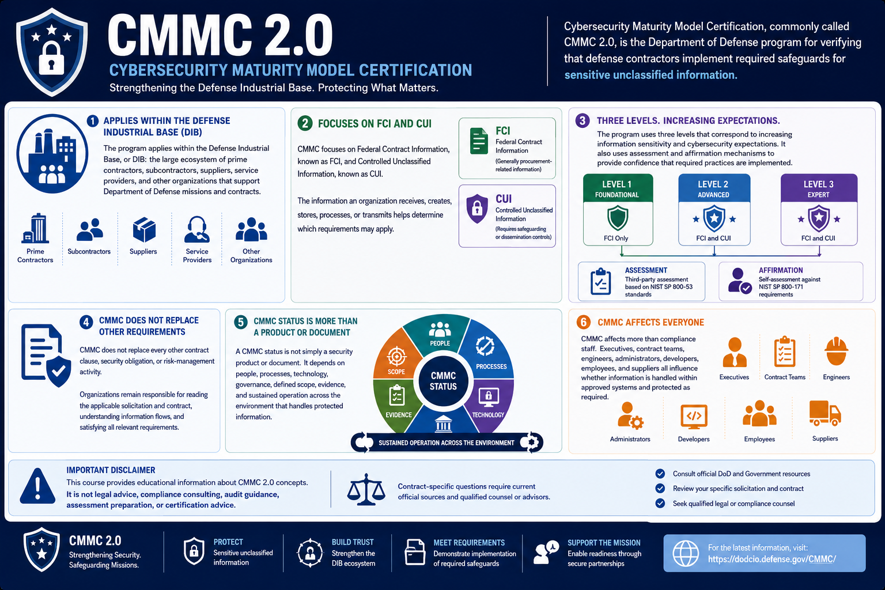

What Is CMMC 2.0?
Introduction to CMMC 2.0
Connecting to LMS... Progress: in progress
Version 1.0 | Date: 2026-06-16 | Educational overview of CMMC 2.0 concepts.

Narration
Cybersecurity Maturity Model Certification, commonly called CMMC 2.0, is the Department of Defense program for verifying that defense contractors implement required safeguards for sensitive unclassified information.
The program applies within the Defense Industrial Base, or DIB: the large ecosystem of prime contractors, subcontractors, suppliers, service providers, and other organizations that support Department of Defense missions and contracts.
CMMC focuses on Federal Contract Information, known as FCI, and Controlled Unclassified Information, known as CUI. The information an organization receives, creates, stores, processes, or transmits helps determine which requirements may apply.
The program uses three levels that correspond to increasing information sensitivity and cybersecurity expectations. It also uses assessment and affirmation mechanisms to provide confidence that required practices are implemented.
CMMC does not replace every other contract clause, security obligation, or risk-management activity. Organizations remain responsible for reading the applicable solicitation and contract, understanding information flows, and satisfying all relevant requirements.
A CMMC status is not simply a security product or document. It depends on people, processes, technology, governance, defined scope, evidence, and sustained operation across the environment that handles protected information.
CMMC affects more than compliance staff. Executives, contract teams, engineers, administrators, developers, employees, and suppliers all influence whether information is handled within approved systems and protected as required.
This course provides educational information about CMMC 2.0 concepts. It is not legal advice, compliance consulting, audit guidance, assessment preparation, or certification advice. Contract-specific questions require current official sources and qualified counsel or advisors.